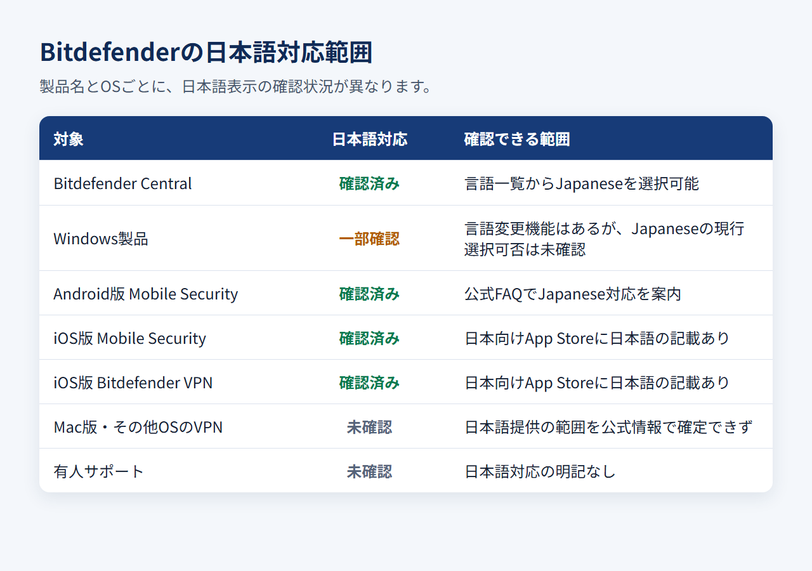

Bitdefenderは日本語で使える？対応範囲・日本語化の手順・サポートを解説
海外製のセキュリティソフトは、日本語の購入ページがあっても、端末上のアプリや問い合わせ窓口まで日本語とは限りません。Bitdefenderも例外ではなく、製品と利用環境によって対応範囲が異なります。
現在、日本語表示を確認できるのはBitdefender Central、Android版Mobile Security、iOS版Mobile Security、iOS版Bitdefender VPNです。一方、Windows製品には言語変更機能があるものの、現行の公式ヘルプではJapaneseが選択肢として明記されていません。Mac版、Windows・macOS・Android版VPN、日本語の有人サポートも、公式情報だけでは日本語対応を確定できませんでした。
リンク先は個人向け製品の公式ページです。料金、対応OS、保護する端末数、初年度と更新時の条件を見比べられます。本記事では、未契約の立場から公式情報と公開情報を整理しています。
結論：Bitdefenderは日本語で使えるが、対応範囲は分けて確認する
Bitdefenderは日本語で使える部分があります。ただし、すべての製品・OS・問い合わせ窓口が日本語に対応しているわけではありません。
日本語で確認できる範囲
公式情報で日本語対応を確認できたのは、次の範囲です。
- 日本語公式サイト：個人向け製品の案内や購入導線を日本語で読める
- Bitdefender Central：画面左下の言語一覧からJapaneseを選べる
- Android版Mobile Security：公式FAQでJapanese対応が案内されている
- iOS版Mobile Security：日本向けApp Storeの言語欄に日本語が記載されている
- iOS版Bitdefender VPN：日本向けApp Storeの言語欄に日本語が記載されている
- 日本語版ユーザーガイド：Total Securityの2021年版が公式配布されている
Centralは契約や端末をまとめて管理するWeb画面です。Centralの表示を変えても、端末にインストールした製品の言語は自動では切り替わりません。
「日本語対応」と一括りにできない範囲
「Settings」から表示言語を変える経路は、Windows製品で確認できます。ただし、現行ヘルプには選択可能な言語一覧がなく、Japaneseを選べるとは断定できません。日本語画面を収録した公式ガイドも2021年版なので、現行製品の裏付けとは分けて扱います。
Mac版はmacOS側でアプリ別の言語を指定する手順が案内されています。ただし、Mac版Bitdefenderが現在Japaneseを提供しているかは公式ページで確認できません。VPNも、iOS版以外のWindows・macOS・Android版まで同じ対応とはいえません。
公式の有人窓口と24時間チャットは用意されていますが、日本語対応の明記はありません。日本語UI、日本語マニュアル、日本語での問い合わせは別々の条件です。
日本語サイト・製品UI・マニュアル・サポートの違い
契約前に見るべきなのは、日本語サイトの有無だけではなく、実際に使う製品のUIと、困ったときの問い合わせ言語です。

CentralとWindows製品の日本語表示
Bitdefender Centralでは、言語セレクターからJapaneseを選ぶと、管理画面全体が日本語に切り替わります。契約状況や保護対象の端末を確認するWeb画面も、日本語で操作できます。
端末に入れるWindows製品には、Centralとは別の言語設定があります。現行ヘルプで確認できるのは「Settings」→「General」→「Change Language」という経路までです。Japaneseが一覧に出るかは明記されていません。購入前に現行版の選択肢を知りたい場合は、30日間の無料体験で実際の画面を確認できます。
Mac・Android・iPhone・VPNは製品別に確認する
Android版Mobile SecurityとiOS版Mobile Securityは、日本語対応を公式情報で確認できます。iOS版Bitdefender VPNも、日本向けApp Storeの言語欄に日本語が記載されています。
一方、Mac版は言語の変更方法こそ公開されていますが、日本語が選択肢として提供されるかは明記されていません。VPNについても、iOS版の対応状況をWindows・macOS・Android版へそのまま当てはめられません。利用する製品名とOSの組み合わせで判断する必要があります。
日本語マニュアルと有人サポートは別
Total Securityの日本語版ユーザーガイドは、機能や設定項目を把握する資料として使えます。ただし2021年版のため、掲載画面や項目名が現行版と異なる可能性があります。
有人サポートは担当者とやり取りする言語の問題です。日本語ガイドがあることは、日本語のチャットや電話を利用できる根拠にはなりません。
Bitdefender CentralとWindows製品を日本語化する手順
CentralではJapaneseを選択できます。Windows製品では言語設定までの経路を確認できますが、現行版でJapaneseが表示されるかは製品画面での確認が必要です。
Bitdefender Centralの表示言語を変える
Centralの表示言語は次の順番で変更します。
- Bitdefender Centralへサインインする
- 画面左下にある言語セレクターを開く
- 言語一覧から「Japanese」を選ぶ
- 管理画面全体が日本語へ切り替わったことを確認する
ここで変わるのはCentralの表示です。端末上の製品が英語のままでも、設定が失敗したわけではありません。
Windows製品の表示言語を変える
表示言語を変えるには、「Settings」→「General」→「Change Language」の順に開きます。希望する言語が一覧にあれば選択し、画面の案内に従ってWindows製品を再起動します。
現行の公式ヘルプにはJapaneseの記載がありません。日本語が必須なら、体験版の言語一覧を確認してから有料プランへ進むと判断しやすくなります。2021年版の日本語ガイドに載っている画面だけを根拠に、現行版も同じと判断するのは避けてください。
日本語が選べないときに確認すること
最初に、開いているのがWeb上のCentralか、端末上の製品本体かを確認します。次に製品名、OS、アプリのバージョンを見ます。Macやスマートフォンには、Windows製品の手順をそのまま使えません。
言語一覧にJapaneseがなければ、設定階層を何度も探すより、現行のWindows製品では選択できない可能性を前提に検討したほうがよいでしょう。Windowsの日本語UIが契約条件なら、日本語対応が明記されたESETやNortonも比較候補になります。
日本語マニュアル・通知・問い合わせサポートの範囲
日本語で自己解決する資料はありますが、担当者に日本語で相談できるかは確認できていません。
日本語で読める公式情報
日本語公式サイトでは、個人向け製品の特徴や製品選択、無料体験、購入までの流れを日本語で読めます。Total Securityの日本語版ユーザーガイドは、機能をまとめて確認したいときに役立つ資料です。
ただし、ガイドは2021年版です。現行アプリでメニュー名や配置が違う場合は、現在の製品画面と現行ヘルプを優先してください。通知やエラーメッセージも、製品とOSごとに表示言語が異なる可能性があります。
日本語で問い合わせられるか
Bitdefenderには公式サポート窓口と24時間チャットがありますが、日本語対応は明記されていません。障害時に有人対応を求める場合、英語でのやり取りが必要になる可能性があります。
日本語でのチャットや電話を必須条件にするなら、日本語サポート窓口が確認できるESETやNortonのほうが条件を満たしやすいでしょう。
料金と始め方：無料体験、支払い、請求書、解約
Bitdefender Total Securityは、クレジットカード不要の30日間無料体験から始められます。Windowsには別製品として、期限のない基本保護のAntivirus Freeもあります。
ここで扱うのは個人向け製品です。個人所有の端末を守るなら個人向け製品を比較します。従業員端末の集中管理や法人向けエンドポイント保護が必要な場合は、法人向け製品として分けて検討してください。
30日間の無料体験から始める
Total Securityの無料体験は製品版と同じ機能を30日間利用でき、支払い方法の登録は不要です。期間が終わると失効するため、自動的に有料契約へ移る体験版ではありません。
Bitdefender Antivirus FreeはWindows専用の基本保護で、利用期限のない無料製品です。Total Securityと同等の機能を恒久無料で使えるプランではないので、無料体験と無料製品を混同しないようにしてください。
個人向け公式ページでは、無料体験の対象製品、保護できる端末数、プランごとの機能差を確認できます。
米国公式で示されている初年度価格は次のとおりです。いずれも税別で、更新価格は初年度と異なる場合があります。
- Antivirus Plus（3台）：年額$29.99（約4,700円）
- Total Security Individual（5台）：年額$59.99（約9,500円）
- Total Security Family（25台）：年額$79.99（約12,600円）
- Premium Security Individual（5台）：年額$79.99（約12,600円）
円換算は1ドル=158円で計算した目安で、為替によって変わります。税務上の扱いは利用状況によって異なるため、必要に応じて税理士に確認してください。
日本からの支払いと請求書
公式の購入手順では、カードとPayPalが支払い方法として案内されています。カード決済では3D Secure 2.0の認証を求められる場合があります。日本発行カードとJCBを利用できるかは、公式情報では確認できません。
購入後は、請求書または支払領収書が請求先メールへ自動送信されます。PDFが必要なら、Bitdefender Centralまたは2Checkout（Verifone）の注文画面からダウンロードや印刷ができます。
自動更新を止める方法と返金条件
自動更新は、Bitdefender Centralの「My Subscriptions」から「My Payments」または「Subscriptions」へ進んで停止できます。停止後も、支払い済みの期間が終わるまでは利用可能です。
初回購入または自動更新から30日以内は返金を申請できます。次回更新だけを止める操作と、現在の契約を返金付きで終了する手続きは別です。
申込前に、対象製品、端末数、初年度価格、更新条件、返金条件を同じページで見比べてください。
日本語サポートを重視するならESETとNortonも候補
日本語の有人窓口、対応OSと台数、体験版での決済登録、請求通貨まで含めると、ESETとNortonの違いが見えます。
ESETは国内販売・日本語サポートを重視する人向け
ESETは、ESET HOMEとWindows・macOS・Android向け製品を日本語で提供しています。日本語ナレッジベースに加え、キヤノンITソリューションズの日本語サポート窓口とFAQがあります。
国内向けプランは、EssentialとPremiumが1台、Ultimateが5台です。30日間の無料体験があり、販売窓口では円建てでクレジットカードとPay-easyを利用できます。日本語UI、国内販売、日本語サポートを一つの窓口でそろえたい人に向いています。
Nortonは日本語のチャット・電話導線を重視する人向け
Nortonは、日本語版のNorton 360アプリ、アカウント画面、製品マニュアルを提供しています。日本語公式サポートサイトからチャットと電話の問い合わせへ進めます。
日本向けプランの端末数は、Standardが2台、Deluxeが3台、Premiumが5台です。30日間の体験版には支払い方法の登録が必要で、終了後に有料ライセンスへ自動更新される場合があります。円建ての日本向け公式ストアでカードを使いたい人、日本語の問い合わせ導線を重視する人に合う候補です。
Bitdefenderの日本語対応でよくある質問
日本語対応は、製品名とOSを組み合わせて判断するのが基本です。
Bitdefender Centralだけ日本語にできますか？
はい。Centralの言語一覧でJapaneseを選ぶと、管理画面全体を日本語にできます。端末上の製品本体は別設定なので、Centralだけ日本語になることもあります。
インストール後も英語のままならどうしますか？
まず、「Settings」→「General」→「Change Language」を開きます。現行ヘルプにはJapaneseの選択可否が明記されていないため、一覧に表示されなければWindows製品の名前、OS、アプリのバージョンを確認してください。
Android・iPhone版も日本語で使えますか？
Android版Mobile SecurityとiOS版Mobile Securityは日本語対応を確認できます。iOS版Bitdefender VPNも日本語対応です。ただし、別のAndroidアプリやWindows・macOS・Android版VPNまで一律に日本語とはいえません。
日本語で問い合わせできますか？
公式サポート窓口と24時間チャットはありますが、日本語対応は明記されていません。日本語の有人窓口が必須なら、ESETやNortonも比較してください。
まとめ：UI・マニュアル・有人サポートを分けて選ぶ
Bitdefenderを選ぶかどうかは、実際に使うOSの日本語UIと、英語の有人窓口を許容できるかで決まります。
Bitdefenderが向く人
Bitdefenderを候補に残せるのは、Central、Android版Mobile Security、iOS版Mobile Security、iOS版VPNの確認済み範囲で足りる人です。加えて、Windows製品の日本語UIを必須とせず、有人サポートが英語になる可能性を受け入れられることも条件です。
料金面では、USDの初年度価格と更新条件を分けて比較でき、Total Securityをカード登録なしで30日間試したい人に合います。ひとり法人でも、個人向け端末保護と法人向けの集中管理を混同せずに選ぶ必要があります。
個人向け公式ページで、利用するOS、端末数、無料体験、初年度と更新時の条件を確認できます。
ESET・Nortonも比べたい人
選択の分かれ目は、購入後に誰へ相談したいかです。国内販売元の窓口で解決したい場合はESET、公式チャットや電話で直接問い合わせたい場合はNortonが候補になります。